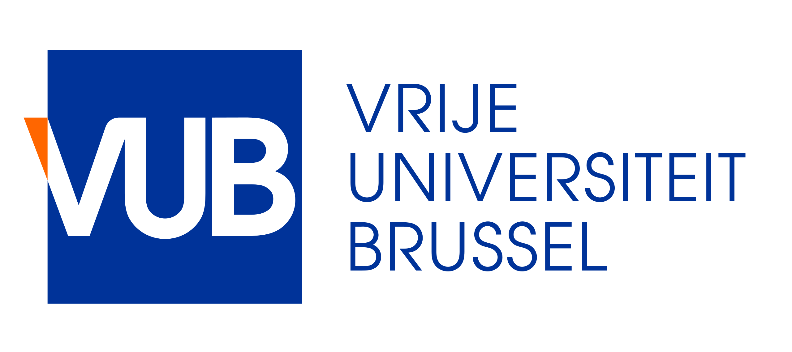

Governing Artificial Intelligence: Designing Legal and Regulatory Responses
International Symposium. Brussels 23 May 2023
Call for Papers
Co-organised by
 Technologies, Law and Society Research Group, School of Law, Trinity College Dublin
Technologies, Law and Society Research Group, School of Law, Trinity College Dublin
Faculty of Law and Criminology, Vrije Universiteit Brussel
Call for papers
The Technologies, Law and Society Group in the School of Law, Trinity College Dublin is collaborating with the MSCA PROTECT PhD Training network and the Law, Science, Technology and Society Research Group of the Faculty of Law and Criminology, Vrije Universiteit Brussel in organising this one-day symposium in Brussels on addressing the global challenge presented by the growing impact of artificial intelligence (‘AI’) on business, society, and the world of work.
Organisers
Organisers
Andrés Chomczyk
Organizer Vrije Universiteit Brussel
Researchers
PhD Candidates
 Beatriz Esteves
Beatriz EstevesDigital Representation of Consent Forms and Privacy Terms |
 Karen Vázquez
Karen VázquezConcept/Term annotation of privacy and ethics assessments. |
|
Andrés Chomczyk Compliant and understandable privacy policy noticies in the fintech industry |
 Delaram Golpayegani
Delaram GolpayeganiRisk of artificial intelligence systems |
|
Haleh Asgarinia Ethical assessment of proposed standard form policies against shifting user expectations |
Leon Rossmaier Ethics of Personal Data from Online Mobile, Wearable and Social Media Applications |
 Jana Misic
Jana MisicInteractions of algorithmic decision-making in the public sector with shared public values and visions of a future digital society |
Michał Wieczorek Ethical aspects of self-tracking technologies |

![]()